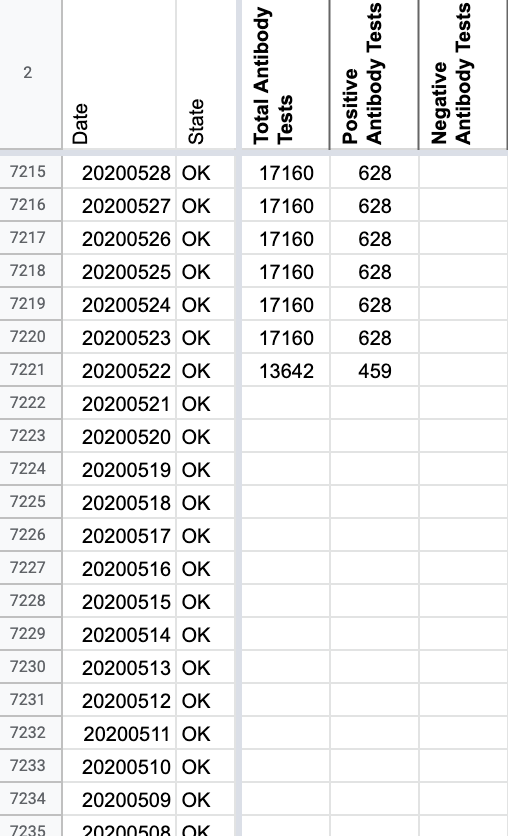
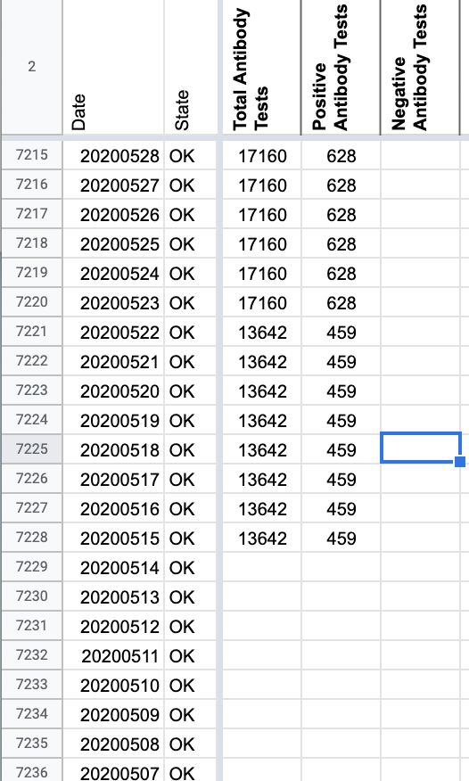
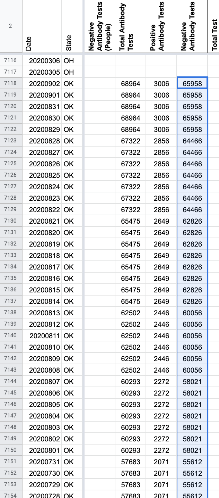
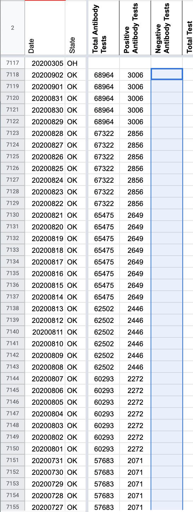

[OK] Removing negative serology/antibody calculation & adding total and positive antibody values for 5/15-5/21
Issue number 809
jaclyde opened this issue on September 2, 2020 at 10:49 pm
Labels Data quality Historical Data
State: OK
Describe the problem: CTP started calculating negative serology tests on 5/22/2020 based on OK’s Total antibody tests - Positive antibody tests. We are removing this metric.
While verifying that the metric was always calculated, we realized that OK started reporting Total and Positive Antibody a week before CTP started recording it. Backfilling that week (the values only update weekly) from the May 8-May 14 Weekly Epidemiology and Surveillance Report. Source: 2020.05.15_weekly_epi_report.pdf
BEFORE: 
AFTER: 
This issue has been automatically marked as stale because it has not had recent activity. It will be closed if no further activity occurs. Thank you for your contributions!
This issue has been closed because it was stale for 15 days, and there was no further activity on it for 10 days. You can feel free to re-open it if the issue is important, and label it as “not stale.”
This was completed. I just forgot to close the issue.
BEFORE: 
AFTER: 
Values: 65958 65958 65958 65958 65958 64466 64466 64466 64466 64466 64466 64466 62826 62826 62826 62826 62826 62826 62826 62826 60056 60056 60056 60056 60056 60056 58021 58021 58021 58021 58021 58021 58021 55612 55612 55612 55612 55612 55612 55612 53331 53331 53331 53331 53331 53331 53331 47880 47880 47880 47880 47880 47880 47880 43548 43548 43548 43548 33319 33319 33319 33319 33319 33319 33319 33319 33319 33319 28963 28963 28963 28963 28963 28963 28963 26441 26441 26441 26441 26441 26441 26441 26441 22539 22539 22539 22539 22539 22539 22539 19532 19532 19532 19532 19532 19532 19532 16532 16532 16532 16532 16532 16532 13183